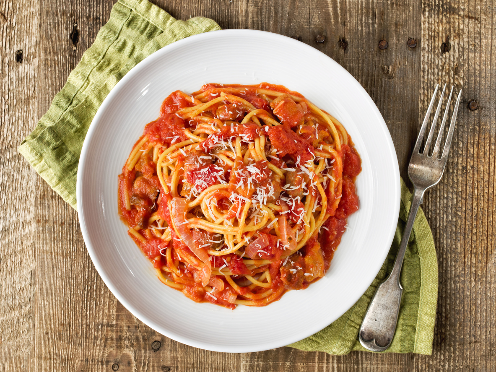

Pasta Amatraciana

Descripcion
La pasta a la Amatriciana es un plato de origen italiano. Se compone de
espaguetis, que se cocinan al dente y se mezclan con una salsa de tomate
rica y sabrosa. La salsa está hecha con tomates maduros o en conserva,
guancialesalteado, un toque de guindilla para darle un toque picante, y se
completa con queso Pecorino rallado. La combinación de sabores es intensa
y satisfactoria, y la pasta resulta reconfortante y llena de tradición
italiana.
ingredientes
- 400 g de espagueti
- 150 g de tocineta
- 400 g de tomates pelados
- 100 g de queso Pecorino Romano rallado
- Un toque de chile rojo
- Una cucharada de aceite de oliva
- Sal y pimienta
Pasos
-
Comienza cortando el guanciale en tiras o cubos de aproximadamente 1 cm
de grosor.
-
Calienta una sartén grande a fuego medio y agrega una cucharada de
aceite de oliva.
- Una vez que el aceite esté caliente, añade las tiras de guanciale
-
Fríe el guanciale, removiendo ocasionalmente, hasta que las tiras se
vuelvan doradas y crujientes.
-
Una vez que el guanciale esté dorado y crujiente, incorpora el chile
rojo picado en la sartén.
-
A continuacion agrega los tomates pelados. Si los tomates están enteros,
puedes aplastarlos ligeramente con un tenedor o un machacador.
-
Revuelve bien todos los ingredientes en la sartén para que se integren.
-
Reduce el fuego a bajo y deja que la salsa se cocine lentamente, unos 20
minutos aproximadamente.
-
Mientras la salsa se cocina, puedes aprovechar para ir preparando la
pasta y los demás elementos del plato.
- Llena una olla grande con agua y llévala a ebullición.
- Añade una o dos cucharadas de sal al agua hirviendo.
- Una vez que el agua esté hirviendo, añade los espaguetis
-
Remueve ocasionalmente para evitar que la pasta se pegue entre ella.
- Cuando la pasta esté lista, escúrrela.
-
Lleva los espaguetis escurridos directamente a la sartén con la salsa.
-
Mezcla suavemente los espaguetis con la salsa, asegurándote de que quede
bien impregnada.
-
Cocina todo junto durante un par de minutos más, para que los sabores se
unan perfectamente.
- Sirve la pasta en platos hondos, aún caliente.
-
Espolvorea generosamente el queso Pecorino Romano rallado sobre la pasta
caliente.
Bon appétit